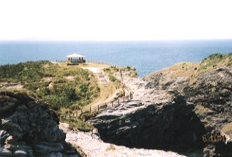

6m Today

Zamami Okinawa
TIME:UTC(JST-9:00)
【Back Issues May.99】
31.May.99
(14:00-c)
BY-TV 01:00- 49.750 --
9M-TV 01:00- 48.240/260 --
VR2LC 01:43 50.103 CW
◎ 今日は午前中から西方向のEsで沖縄と弱いVR2が入感。 Esシーズンになっても夜間の西方向のDX
のパスが伸びている。 "低迷"しているとは言ってもやはりサイクルの上昇期。
JA→VQ9など8,000Kmを超えるDXがこの時期まで楽しめるのは嬉しい。 最近クラスターなどでリポー
トされているVK8→5B4、9H1などのパスもこの時期としては"超一級"のDXと言える。
 6mがらみのDX-Pedi(一部運用中) [Feedback] JAから伝搬があると思われるもののみ掲載
** KH0(N.Marianas Is) 12.Jun-15.Jun 160m-6m OP.JH2CYU.JH2QFY.JR2BUM.JR2XKV
JJ2CYO.JS2ITP.KF4VSV(JF2WXS)
6m=50.090(CW).50.115(SSB)
[QSL Home QTH]
** T30JH(W.Kiribati) 24.Jun-04.July HF & 6m OP.VK2GJH [QSL Home QTH]
** T88(Palau) 20.Jul-25.Jul 80m-6m OP.T88JR=JH3FJG.T88DX=JI3DLI
[QSL Home QTH]
+ FO(French Polynesia)19.May-13.Aug HF & 6m OP.F2HE
+ FO(Maruquesas 27.May-27.Jun HF & 6m OP.F2HE
& Austral Is)
+ E4(Palestine) 14.Jun-28.Jun 6m (HF?) OP.G3SED.G3KOX.GJ4ICD/G4ICD 6mがらみのDX-Pedi(一部運用中) [Feedback] JAから伝搬があると思われるもののみ掲載
** KH0(N.Marianas Is) 12.Jun-15.Jun 160m-6m OP.JH2CYU.JH2QFY.JR2BUM.JR2XKV
JJ2CYO.JS2ITP.KF4VSV(JF2WXS)
6m=50.090(CW).50.115(SSB)
[QSL Home QTH]
** T30JH(W.Kiribati) 24.Jun-04.July HF & 6m OP.VK2GJH [QSL Home QTH]
** T88(Palau) 20.Jul-25.Jul 80m-6m OP.T88JR=JH3FJG.T88DX=JI3DLI
[QSL Home QTH]
+ FO(French Polynesia)19.May-13.Aug HF & 6m OP.F2HE
+ FO(Maruquesas 27.May-27.Jun HF & 6m OP.F2HE
& Austral Is)
+ E4(Palestine) 14.Jun-28.Jun 6m (HF?) OP.G3SED.G3KOX.GJ4ICD/G4ICD
[解説] ****=確実！ ***=まず大丈夫！ **=難しいがもしかしたら？ *=沖縄なら？ ＋=参考
|
30.May.99
(14:00-g)
BY-TV 00:00- 49.750 --
HL1LTC 00:03 50.110 SSB
HL3IUA 01:16 50.115 SSB
HL5BKO 01:20 50.150 SSB
DS3CHK 01:26 50.168 SSB
HL3EPH 01:28 50.141 SSB
JL1LAP/JD1 07:39 50.120 SSB
JD1BIA/JD1 08:12 50.120 SSB
HL3IUA 09:16 50.115 SSB
VK8VF 10:00 50.057 CW Beacon
VR2XMT 12:53 50.110 SSB
BV/JH3GCN 13:47 50.110 CW
◎ 昨夜入感したVQ9GB(Chagos Is)は1エリアでも強力だった。 15:00z過ぎに一旦信号は落ちたが、
30分ほどして再び上昇。 二度目に入感してきたときには2KHz UPのスプリットでパイルアップを捌
いてくれたため混乱もなく、5月17日のVQ9VK以来のFBなQSOが行われた。
◎ 6mでは未交信の南太平洋のMarquesas Isからの運用を計画していたF2HE・Alanは、5月20日に
タヒチ(French Polynesia)に到着、FO0CLAのコールサインを受け取り、予定より早い5月23日に
Marquesas IsにQSYした。 AlanはMarquesas Isから一ヶ月間運用の予定。(TNX JF2MBF)
日中は国内の強力なEsが発生するので伝搬は難しいと思われるが、Es発生の弱まる夕方(07:00z頃)
からの南太平洋のパスにも注意。
今日(30日)の05:50z頃にハワイのKH7RがJA6YBR(50.017MHz)のビーコン受信をクラスターにリポー
トしている。
29.May.99
(16:00-e)
BY-TV 00:00- 49.750 --
HL5XF 00:58 50.120 SSB
HL5BKO 02:14 144.120 SSB
HL1/JI1EFP 02:52 50.099 CW QSL JQ1NGT
HL1MLO 03:00 50.133 SSB
V73SIX 07:27- 50.014 CW Beacon
JD1BIA/JD1 08:42 50.120 SSB
JL1LAP/JD1 08:54 50.120 SSB
VQ9GB 14:45 50.110 CW
BD7IA 15:06 50.106 CW
VR2XMT 15:09 50.120 SSB
BV/JH3GCN 15:17 50.110 CW
*VQ9GB 15:29 50.110 CW
◎ 朝から西方向のEsが強力で久しぶりにJA1→JA3の近距離Esもオープン。 特に01:00z前後のJA1→HL5
の伝搬が良く、50MHz帯と同時に144MHz帯でもHL5BKOなどがRS59で入感。 午後は弱い北方向のEsが発生。
夕方からオープンしたJD1(Chichijima)は長時間に渡り強力に入感。
28.May.99
(14:00-d)
BY-TV 01:00- 49.750 --
VK-TV 07:00- 46.240 --
VK-TV 09:00- 46.172 --
VK4JH 09:09 50.110/130 --
VK4RIK 09:10- 52.445 CW Beacon
V73AT 10:09 50.110/130 SSB/CW
V73SIX 10:10 50.014 CW Beacon
VK4ABW 10:31 50.110/130 SSB QSO with V73AT
◎ 日中は強力なEsの発生もなく静か。 09:00z頃からVK-TV(46.172MHz)が上昇、クイーズランド北部
が入感してきた。 昨日のこの時間に強力に入感したVK8VFは、VK4から30分ほど遅れて聞こえてきた。
久しぶりにV73ATがフラッターを伴って強力に入感。
27.May.99
(14:00-c)
VK-TV 09:30- 46.172 --
VK4ABW 09:42 50.110 CW
BY-TV 03:00- 49.750 --
VK-TV 04:40- 46.240 --
VK8VF 09:10- 50.057 CW Beacon
VK4BLK 09:13 50.110/120 SSB
VK8MS 13:02 50.110 SSB
◎ 朝から東京も台風並みの強風が吹き荒れた。 クランクダウンしたアンテナにこの時期には珍しく
午前中にVK4が入感してきた。 関東近辺でもかなりの被害を与えた"メイストーム"も午後2時過ぎに
は一段落。
26.May.99
(14:00-c)
BY-TV 00:40- 49.750 --
VK-TV 08:30- 46.172 --
VK8VF 09:45- 50.057 CW Beacon
◎ 日中は強力なEsの発生もなく静かな6m。 09:00z頃から46MHz帯のVK-TVの上昇に続いて、VK8VFが強
力に入感してきた。
◎ 仕事でCambodiaに滞在中、週末を中心にXU1YYで運用する予定だった山崎さんは、本日(26日)でXUで
の仕事を終え、29日にタイ経由で帰国する。 約二週間の滞在中に運用出来たのは5月16日だけだったが、
この日、FT-680(10W)とダイポールで運用した6mの信号が、短時間ながらJAにも聞こえた。
今回山崎さんが滞在したのは、現在Cambodia在住でT31KYやNH6RT/KH8など、太平洋のDX Pediでもお馴
染みの"Kiyoko"(Yamakami Kiyoko)さん宅。 今回の訪問を機会に"Kiyoko"さんのライセンスを申請した
との事なので、そのうち6mでもXUの新局が聞こえるかも？。
25.May.99
(10:00-c)
BY-TV 00:45- 49.750 --
BV2NT 01:54 50.110 SSB
◎ 午前中に入感したBVを除き、国内の強力なEsの発生もない静かな6m。 夜間の西方向からのDXのパス
は、ほんの少し残っているが、先日までの"強さ"は無くなった。
24.May.99
(14:00-d)
BY-TV 00:40- 49.750 --
VR2JK 01:00 50.110 CW
BV2NT 09:53 50.110 SSB
◎ 午前中は西方向(沖縄)、午後から北方向(JA8)のEsが強力。
◎ VK2GJH・JACKは6月24日から7月4日までの2週間、Western Kiribati(Tarawa)からT30JHの運用を
予定している。 Esシーズンのこの時期はJAからのQSOは難しいが、JACKは6mを中心にQRVしたいと張り
切っている。 使用するRigはIC-736(100W)に5ele。
尚、JACKのDX Peditionに対するQSLの請求方法など、注意事項が本欄の 1998年12月1日に掲載されて
いるので参照のこと。
23.May.99
(14:00-b)
BY-TV 00:10- 49.750 --
BV2B 00:14 50.110 SSB
JF8HIQ/JD1 01:31- 50.320 SSB
WH2M 07:45- 50.110/120 SSB/CW
VK8MS 12:58 50.110 SSB
VK8VF 14:00- 50.057 CW Beacon
◎ 午前中から午後にかけての近場のEs、夜間の南西方向のF2と、二つの異なるDX伝搬が混在する5月の
コンデション。 6月のEsの最盛期まではこの状態が続く。
22.May.99
(16:00-e)
BY-TV 01:00- 49.750 --
VR2ZGC 02:10 50.110 SSB
VR2XMQ 02:10 50.120 SSB
VR2LC 02:15 50.100 CW
BV4SF 02:17 50.150 SSB
BV2NT 02:25 50.110/120 SSB QSL Direct only
HL3IUA 04:55 50.115 SSB
HL1LTC 05:18 50.110 SSB
HL1ACW 05:37 50.160 SSB
DS1HTU 06:53 50.175 SSB
VK-TV 07:00- 46.172 --
ZL-TV 07:00- 45.240/260 --
(ZL3NW 07:11 50.110/130 SSB JA2's)
VK4BRG 08:30- 50.077 CW Beacon
VK4ABP 08:30- 52.346 CW Beacon
VK4BLK 08:38 50.110/125 SSB
YB0CBI 15:06 50.112 SSB
YB5QZ 15:27 50.110 CW
◎ 今日も朝から西方向のEsでVR2、BV、HLが強力。 Es層の弱まった夕方近くなってVK/ZLのTVが上昇、
VK4'sが入感してきた。 夜間のYB'sは弱い。
21.May.99
(15:00-d)
BY-TV 00:30- 49.750 --
9M-TV 00:30 48.240/260 -- weak
BV2NT 11:02 50.114 SSB
BV/JP1RIW 11:02 50.114 SSB
VR2ZGC 14:06 50.110 SSB
BV2SR 14:32 50.110 CW
BD7IA 14:36 50.110 CW
VR2XMT 14:36 50.110 SSB
BG7OH 14:50 50.120/140 SSB
VR2BG 14:54 50.104 CW
◎ 午前中から西方向のEsが強力。 この時期は1,500-2,000Km付近の比較的"足の長い"伝搬が良好に入感
している。
20.May.99
(13:00-d)
BY-TV 02:00- 49.750 --
9M-TV 02:00- 48.240/260 --
VR2ZUC 11:35 50.110 SSB
VR2ZGC 11:42 50.130 SSB
BV2NT 11:45 50.110/125 SSB
VR2LC 12:39 50.104 CW
BD7IA 12:48 50.110 CW
◎ 日中は西方向からの弱いTVが入感している程度。 2エリアでBVの入感がリポートされていたが、
Solar noiseが高くDXの気配は無かった。 夜になって6エリアのEsと共にVR2、BVが入感してきた。
19.May.99
(16:00-c)
9M-TV 00:45- 48.240/260 --
BY-TV 00:45- 49.750 --
JD1BIA 03:30 50.110/130 SSB
VQ9DX 14:17 50.110 CW weak
BV2DP 15:11 50.110 CW
◎ 午前中からEsで北海道方面が強力。 西方向からのTVのバズが強力に入感していたが、日中には
JD1以外のDXは確認出来なかった。 夜間のVQ9DXは信号も弱く、直ぐに聞こえなくなった。
◎ Esシーズンは、6mのDXを狙って50.110MHz付近をワッチしている局にとって"イライラ"させられ
る時期でもある。 普段から海外DXに興味も持たない局が国内QSOのために"ところかまわず"CQを出
してくるからなのだが、"DXの窓口"の50.110MHzもその例外ではない。
少しでも6mのDXに興味を持っている局なら、この周波数付近がローカル(国内)QSOに適していないこ
とは常識なのだが、国内QSOだけを目的に6mに出てくる局にはこの常識も通用しない。
明らかに国内QSOを目的にCQをだしている局に"QSY"をお願いしても、なぜQSYしなければならない
のか簡単な説明では納得しない局もいて、一悶着起こす場合も少なくない。
挙げ句の果てに「電波法では何処で出ても良いはず...」と開き直られては返す言葉もない。
この問題は新たにQRVしてくる局に"6mの運用のルール"を良く理解して貰うしか解決の方法はない。
最近はDXがオープンすると50.200MHz以上まで広がってQSOしている事も多くなったので、サイク
ル上昇期だけでも、50.200MHz以下でのローカル(国内)QSOは控えて貰いたいところ。
せめて50.150MHz以下は、DXが聞こえていない時でもSSBでの国内QSOには使わないように配慮して
頂きたいもの。 突然のDXオープンに備えて...。
18.May.99
(15:00-e)
BY-TV 02:30- 49.750 --
9M-TV 06:00- 48.240/260 --
BV2PU 08:00 50.110/100 CW
BG7OH 13:07 50.130 SSB
VR2ZST 13:06 50.150 SSB
VR2XMT 13:09 50.115 SSB
BD7IA 13:12 50.100 CW
◎ 午前中から北、南西方向の国内Esが強力。 DXはVR2、BVなどEsの範囲が聞こえていたが、コンデ
ションの変化が激しい。
昨夜のVQ9VKは、1エリアでは1時間半ほどオープン、多くの局がQSO出来た。 JR6(沖縄)と本土間の
Esが強力な時期は、F2との"混合"のパスが伸びてくる。 今日は早々と西方向のコンデションは落ちて
しまった。
17.May.99
(16:00-f)
VK-TV 02:00- 46.172 -- weak
BY-TV 03:00- 49.750 --
9M-TV 06:00- 48.240/260 --
JD1BIA 08:32 50.110 SSB Ogasawara Is.
VK8VF 09:54- 50.057 CW Beacon
VK8MS 09:54 50.110 SSB
VK8VF 09:54 50.057 CW Beacon
P29PL 10:01 50.110 SSB/CW
BV2NT 10:44 50.120 SSB
VQ9VK 14:28 50.110 CW 15:40 F.OUT
◎ 週末は9M2'sの入感で賑わったが、今日の日中は9M-TVが上昇しても、平日でアクティビティが
ないため？西方向からは強力なバズだけ。
太平洋方面はEsの発生とともに、近場のJD1の入感がリポートされる様になった。
夜間(14:22z)に入感してきたVQ9VKは1エリアでも強力で、ハイスピードのキーイングとスプリット
でJA'sのパイルを捌いていた。
◎ 9M0CのDX Peditionでお馴染みのCDXCの会報に、ZL2ALによる「ZL9CIのDX Pedition」の詳細
が報告されている。 "今世紀最大"のDX Peditionと言われたこの運用でZL9CIは96,004QSOを記録、
1997年のVK0IRの交信記録(80,673)を超えた。
6mでも短い時間ながらオープンし、New EntityをJAにも与えてくれたのは記憶に新しいが、この
リポートでは6mのQSOの内訳が下記の通り報告されている。
CW 61 (Asia=JA=44 Oceania=17)
SSB 33 (Oceania=33)
Total 94
16.May.99
(13:00-h)
VR2LC 02:28- 50.110/105 SSB/CW
VR2XMT 02:35 50.110 SSB
9M-TV 02:40- 46.240 --
9M2TO 03:17- 50.118 CW/SSB Penang
BG7OH 03:50 50.125 SSB
VK4ABW 05:05 50.110 SSB
*9M2TO 05:15 50.117 SSB
9M2JKL 06:11 50.107 CW Kuala Lumpur
9M2KT 06:58 50.110/200 SSB Penang
VK6ACY 07:00 50.125 SSB
XU1YY 07:09 50.110 SSB weak
9M2/JI1ETU 07:55 50.130/85 SSB/CW Penang
◎ 午前中から南西方向のEsで九州・沖縄が強力。 ダブルホップのVR2'sは、1エリアではスポット的な
入感で信号は不安定。 今日も9M2TOが強力。 06:00z頃から9M2JKLがQRVしてきたが9M2TO、9M2/JI1ETU
等に比べ信号は極端に弱く、ペナン島(Penang)とクアラルンプール(K.L)間の300Kmの距離がコンデショ
ンの差に大きく影響。
◎ 連日のFBな9M2のオープンで入感が期待されたXU1YY(Cambodia)だったが、21MHzでQSOした山崎さん
からの連絡では、当初予定していた6mのアンテナは、今回はXUに持参しなかったとのこと。
それでも、9M2-JAの6mオープンの情報を聞き、急ごしらえのダイポールでQRVしている。 この急造
アンテナはSWRが下がらず、再度アンテナを調整して6mにトライしてみたいとのことだった(05:20z)。
この後、07:00z頃からXU1YYが50.110MHzで入感してきたが、1エリアではTVのバズに埋もれて呼べる
状態ではなかった。
15.May.99
(16:00-f)
BY-TV 03:00- 49.750 --
9M-TV 03:00- 48.240/260 --
VR2IL 05:43 50.110/120 SSB
VR2XLN 05:51 50.110 SSB
VR2ZDH 05:54 50.110/150 SSB
VR2XRW 05:56 50.120 SSB
9M2TO 06:50 50.118 CW/SSB 3KHz UP RST599/RS59
VK4RIK 09:00- 52.445 CW Beacon
VK4BRG 09:00- 50.077 CW Beacon
9M2NK 09:37 50.107 CW
*9M2TO 12:05- 50.118 CW/SSB QRT or F.OUT?
P29PL 12:02 50.110 CW
VK8VF 12:10- 50.057 CW Beacon
V85HG 12:58 50.240 SSB
VQ9ZZ 14:22 50.110 CW
VK8MS 14:28 50.110 SSB
HL1LTC 15:23 50.110 SSB
◎ いよいよ本格的なEsシーズン到来を告げる様に早朝から49.750MHzのバズが聞こえる様になった。
午前中はJA8方面の"北"のコンデションが上昇、43MHz帯でもUA(ロシア)のFM(業務局？)が強力に入感し
ている。 午後になって強力なバズの中からVR2'sが聞こえてきた。 今日の9M2TOは1エリアでも国内Es
並みの強さで12:00z(21:00JST)過ぎまで入感していた。
9M2のオープンが一段落した14:15z頃から、VQ9ZZが1エリアでも入感してきたが、西日本のパイルを
"乗り越え"QSOするのは容易ではない。
14.May.99
(15:00-f)
BY-TV 01:00- 49.750 --
VK-TV 01:00- 46.240 -- Weak
ZL-TV 01:00- 45.250 -- WeaK
9M-TV 01:15- 48.240/260 -- Weak
VR2LC 01:38 50.110 CW
VK-TV 06:00- 46.172 --
V73SIX 06:36 50.014 CW Beacon
V73AT 06:55 50.110 CW
3D2TC 08:06 50.110 SSB
VK4RIK 09:33- 52.445 CW Beacon
VK4BRG 09:33- 50.077 CW Beacon
VK8VF 12:33- 50.057 CW Beacon
VK8MS 12:49 50.110 SSB
YC1MH 13:05 50.130 SSB
◎ 朝から南西方向のEsが強力。 1エリアからはJA4-JR6(沖縄)が聞こえていたが、特に南西諸島から
九州が強い。 久しぶりにJA6YBR(宮崎)、JR6YAG(沖縄)のビーコンが入感していた。
◎ VK3OT・Steveからの情報によると、50.053MHzでQRVしていたVK3SIXのビーコンは9月までQRTすると。
13.May.99
(13:00-d)
BY-TV 06:30- 49.750 --
VK-TV 08:20- 46.172 --
VK4JH 09:14 50.110 CW
VK8VF 09:22- 50.057 CW Beacon
VK8MS 09:41 50.110/140 SSB QSO with 5B4FL !
◎ 夕方までは46/48MHz帯のTVも入感しない"静かな"コンデション。 49.750MHzのTVは06:00z過ぎから
上昇してきたが、入感方向は西ではなく南東方向。 南太平洋方面は近場のEsで遮られていたのかも。
VKのTVが入感してきたのは08:00zを過ぎてから。 49.750MHzのTVも西からの入感に変わった。
昨夜、2エリアまで入感していたVQ9DXだが、相変わらず1エリアまでは伸びてこない。
12.May.99
(15:00-f)
VK-TV 06:00- 46.172 --
3D2TC 07:44 50.110 SSB
VK4BRG 08:10- 50.077 CW Beacon
VK4JH 08:47 50.110 CW
BY-TV 09:00- 49.750 --
VK4WDM 09:49 50.110/120 SSB
YC1MH 12:19 50.110/130 SSB
YC1EHR 12:56 50.130 SSB
*YC1EHR 13:23 50.110 CW
YF1OO 13:20 50.110 CW
N1WLV/DU1 13:30 50.110 SSB/CW
DU1SAN 13:40 50.120 SSB
(VQ9DX 14:30- 50.110 CW/SSB JA2-6)
◎ 昨日同様、南太平洋方面のコンデションは3D2TCの入感から始まった。 VK4も強力に入感するが、エリ
アはタウンズビル付近の北部。 09:00z頃から西方向からのTVのバズが上昇してきた。 夜間のYC'sは強力。
◎ F2HE・Alanは5月19日から8月13日までFO5OGのコールサインでFrench PolynesiaのTuamotou(OC-131)
とRaiatea(OC-067)からのQRVを予定している。 Alanはこのツアーの期間中の5月27日から6月27日まで、
Maruquesas Is.(Nuku Hiva=OC-067)と、Austral Is(Australは地元局・FO5QGから?)の運用を予定して
いる。 RigはIC-706にR-6000(Cushcraft)で、6mを含むオールバンド。
時期的に遅いのでJAからのパスは難しいが、H40(Temotu Is)に続き太平洋地区に誕生したNew Entityから
の今後のQRVに注目したい。
尚、今年の3月に予定していた FO3BMによるAustral Is(Rurutu)からの運用は、秋まで延期されている。
11.May.99
(14:00-f)
VK-TV 06:20- 46.172 --
VK4PU 06:59 50.110 CW
VK4BRG 08:45 50.077 CW Beacon
VK4FNQ 08:48 50.110 SSB QSO with KH7R
VK4JH 08:54 50.150 SSB
3D2TC 09:32 50.110 SSB QSO with JA1 & KH7U
V73SIX 09:35- 50.014 CW Beacon FB!
VK4ABW 09:37 50.110 SSB QSO with KH7U
VK4WDM 09:39 50.110 SSB
V73JK 09:44 50.110 SSB QSL via V73AX
V63AO 10:09 50.120 SSB
VK4KK 10:22 50.110 CW
*V73SIX 11:25 50.014 CW Beacon
◎ 日中は46/48MHz帯のTVの入感もなく静か。 09:00z頃から早めのイブニングタイプのTEで南太平洋方
面が聞こえだした。 VK4北部、3D2、V73、V63がフラッターを伴いながら広範囲に入感。
10.May.99
(15:00-d)
VK-TV 04:45- 46.172 --
9M-TV 07:00- 48.240 -- Weak
VK8RAS 07:00- 50.047 CW Beacon
VK4ABW 08:37 50.110 SSB
VK4BRG 08:38- 50.077 CW Beacon
VK4BLK 09:04 50.110/135 SSB
VK4JH 09:24 50.110/150 SSB
VK8KTC 09:47 50.110/150 SSB
VK8VF 11:54 50.057 CW Beacon
V73SIX 12:04 50.014 CW Beacon
YC1MH 12:15 50.110/130 SSB
YC1EHR 12:22 50.130 SSB
YF1OO 12:25 50.130 SSB
(9M2JK 14:18 50.120 CW JA6)
(VQ9ZZ 14:25 50.110 CW JA2-6)
◎ ここ2、3日は太陽活動が活発で9日のSolar flaxは178.3、Sunspot numberも192まで上昇している。
このFlareの影響は10、11日頃に現れ、コンデションの回復は13日以降と予想されている。
夜間にTEによる伝搬でVK4/8、P29、YB/YC、9M2、9M6などが入感しているが、2エリアまで入感してい
るVQ9は相変わらず1エリアでは聞こえない。
◎ 下の数字は1998年7月から1999年4月までのSolar dataの月平均値だが、1999年に入ってからの伸び
が悪くなっているのが判る(資料:Sunspot Index Data Center)。
Y/M SF SSN SSSN
98.07 114.0 66.6 65.5
98.08 136.0 92.2 67.8
98.09 138.3 92.9 69.5
98.10 117.2 55.5 70.5
98.11 140.1 74.0 ---
98.12 150.1 81.9 --- SF:Average solar flux
99.01 140.6 62.4 --- SSN:International sunspot number
99.02 141.9 66.1 --- SSSN:Smoothed sunspot number
99.03 126.3 69.1 ---
99.04 117.2 63.9 ---
09.May.99
(14:00-d)
VK-TV 01:15- 46.172 --
BY-TV 03:45- 49.750 --
9M-TV 06:20- 48.240 --
9M2TO 06:25 50.120/117 CW/SSB
VK4BLK 09:36 50.110 SSB
VK-TV 09:55 46.172 --
P29PL 09:58 50.110 CW
VK8VF 13:00 50.056 CW Beacon
VK8MS 13:22 50.110 SSB
◎ 今日は早い時間帯から49.750MHzのBY-TVが入感してきた。 昨日の様な"Es絡み"のBVの入感はなか
ったが、そろそろコンデションは近場のDXに切り替わる気配が感じられる。
9M2TOが久しぶりに良く聞こえていたが、バズの中からJAの信号を"取って貰う"のは容易でない。
08.May.99
(15:00-g)
VK-TV 05:30- 46.172 --
ZL-TV 05:30- 45.260 -- Weak
9M-TV 06:00- 48.240/260 --
VK4BLK 07:12 50.110/135 SSB
VK4BRG 07:22- 50.047 CW Beacon
VK4JH 07:59 50.110 SSB
BV2NT 08:28 50.120 SSB
BV/JP1RIW 08:33 50.114 SSB
VK4KK 08:45 50.110 CW
BV4QI 08:58 50.110 SSB
VK8RAS 09:20- 50.047 CW Beacon
VK4ABP 09:20- 52.346 CW Beacon
VK4RIK 09:20- 52.445 CW Beacon
(T22JY 09:40 50.107 CW JA2-6)
P29PL 10:08 50.110 SSB
VK8VF 11:53- 50.056 CW Beacon
VK-TV 12:15 46.172 --
YC1MH 12:52 50.110/130 SSB
VK8MS 12:56 50.110/142 SSB
VK4ABW 13:51 50.110 CW
9M6JY 14:21 50.115 SSB
◎ アクティブに6mにQRVしていたSamoaの5W1SA・SakumaさんのQSLマネジャーをしているJH7OHF・小
野さんからの情報によると、現在5W1SAは引っ越しのため、全てのバンドで停波中とのこと。 6月中に
は復帰の予定だが、Esシーズンが終わる秋までは、JAとの6mのパスは"お休み"となる。
尚、9月頃にZK3(コールサインはZK3SAを予定)からのQRVも計画していると。 (TNX JH7OHF)
07.May.99
(15:00-f)
ZL-TV 03:00- 45.250 -- Weak
VK-TV 04:50- 46.172 --
9M-TV 07:00- 48.240/260 --
VK8RAS 07:40- 50.047 CW Beacon
VK4JH 08:29 50.110 CW
VK4BLK 08:31 50.110/155 SSB
(4S7EA 08:32 50.110 SSB JA5CMO)
(T22JY 08:53 50.107 CW JH6NKZ)
YF1OO 13:55 50.110 SSB
*YF1OO 14:17 50.110 CQ CQ DX
◎ T22JY、4S7EAと今日のコンデションは"西日本寄り"だった。 JA5で4S7EAが入感していた同じ時間、
1エリアではVK4が聞こえていただけ。 相変わらず南西方向のパスには恵まれない。 T22は確認出来な
かった。
06.May.99
(12:30-c)
VK-TV 05:30- 46.172 --
T22KJ 08:04- 50.107 CW CQ Beacon
T22JY 08:13 50.107 CW QSX UP5 to 10
VK4FNQ 08:21 50.110/130 SSB
VK8RAS 08:36- 50.047 CW Beacon
9M-TV 08:40- 48.240/260 --
*T22JY 09:20 50.107 CW Weak
*VK8RAS 11:55- 50.047 CW Beacon
VK8VF 11:56- 50.056 CW Beacon
VK4JH 12:10 50.110/115 SSB
◎ 昨日のJR6でのオープンに続いて、今日は東日本でもT22JYが入感してきた。 昨日はオープンに気
づいたのが遅かったので、今日は早めにビーコンを出し始めたとのこと(28MHzのT22VE談)。
T22のビーコンは50.107MHzで08:00z頃から聞こえだしたが、H40/H44の時と同様、1エリアでも東側
から西方向へとコンデションは移って来た。 08:05z頃から5KHz UPでQSOが始まったが、1エリアでは
強かったのは08:20z頃で、08:45zには急激に信号はダウンしてしまった。 09:00z以降も弱いCWの"CQ"
が確認出来たが、応答するJA局が居ないまま、09:25頃にフェードアウトした。
05.May.99
(13:30-e)
VK-TV 05:00- 46.172 -- Weak
3D2TC 06:23 50.110 CW
VK4JH 08:10 50.110 CW
VK-TV 08:15- 46.240 --
(T22JY 09:28 50.107 SSB JR6RAH etc)
YF1OO 13:18 50.125 SSB
◎ 二日続けて3D2TCが入感している。 Craigの信号は100Wにダイポール(最近ビームアンテナに変更
したとの情報もある)でも良く聞こえていたが、JA局によるT2(Tuvalu)のDX Peditionのオープンも
期待したい...と"早版(09:00z)"でリポートしたところ、JR6(沖縄)からT22JYとのQSO(09:28z)がさ
っそくリポートされた。 1エリアで3D2とQSOしていた時間とは約3時間の差があるが、H40の時の入感
状況からみても東日本ではもう少し早い時間帯にオープンしていたものと思われる。 明日以降の早め
のQRVに期待。
04.May.99
(10:00-e)
VK-TV 03:30- 46.172 --
VK4CYB 05:03 50.110/160 SSB
VK4PU 05:08 50.110/104 SSB/CW
VK4DUG 05:46 50.110/130 SSB
VK4BRG 06:00- 50.077 CW Beacon
VK4CYB 06:10 50.110/120 CW
3D2TC 06:24 50.110/115 SSB
VK4JH 08:10 50.110 CW
VK8RAS 09:15- 50.047 CW Beacon
VK4RIK 09:15- 52.445 CW Beacon
VK4BRG 09:16- 50.077 CW Beacon
VK4ABP 09:16- 52.346 CW Beacon
◎ ここ2、3日は南太平洋方面のコンデションが上昇しているが、時期的にこの1、2週間が春のコンデ
ションの最後となるかも知れない。 1エリアからも弱いEsでJA8やJR6(沖縄)が聞こえる様になった。
VKと入れ替わりにBV、VR2、HL方面が強力に入感し始めたら本格的なEsシーズンとなる。
03.May.99
(10:00-d)
VK-TV 04:00- 46.172 --
VK8RAS 04:20- 50.047 CW Beacon
VK4KK 04:26 50.110 CW/SSB
VK3WH/4 04:45 50.110/120 SSB
VK4ABW 05:05 50.110 CW
VK4BLK 05:22 50.120 SSB
VK4DUG 05:37 50.110/120 SSB
VK4BRG 09:24- 50.077 CW Beacon
*VK8RAS 09:24- 50.047 CW Beacon
VK4RIK 09:25- 52.445 CW Beacon
VK8ZAA 09:32 50.110 SSB
VK8KTC 09:47 50.185 SSB
◎ 4月30日に9N(Nepal)にQSYとの情報があったばかりのAP2WAP(Pakistan)と沖縄が、5月2日にQSO
したとのリポートが流れている。 ここのところ本土でのDXコンデションはパッとしなかったが、沖
縄では8Q7QQが連続入感したり、インド洋方面に対してのコンデションが良かったので、QRVさえあれ
ばQSOの可能性はあった。 AP2WAPに関する詳細は不明だが、今回の入感が"本物"なら6mで初のAPとの
QSOとなる。
02.May.99
(13:00-d)
VK-TV 04:00- 46.172 --
BY-TV 04:00- 49.750 --
(AP2WAP 08:16 50.110 CW JR6HI etc.)
◎ JA局によるT2(Tuvalu)からの運用が始まった。 今のところHF帯だけで6mでの入感リポートは無い。
コンデションが落ち込んでいるのでQSOは難しいと思われるが、オープンがあるとすれば05:00z頃から
が狙い目か？。
IOTA DX PeditionのBI5D(Dongtou Is.)の入感がリポートされているが、本格的なオープンではな
い。 中国沿岸に接近した台風の影響のためか、今日の日中にはHF帯でも聞こえていなかった。
01.May.99
(15:00-d)
VK-TV 02:30- 46.172 --
VK4DMI 03:35 50.110 SSB
VK8RAS 03:36- 50.047 CW Beacon
VK4RGG 03:36- 50.056 CW Beacon
VK4BRG 03:36- 50.077 CW Beacon
VK4CYB 03:38 50.120 SSB OP & QSL JE1LET
VK4KK 04:10 50.110 SSB
(BI5D 08:50- 50.110 CW JA2- IOTA AS-141)
◎ PakistanからQRV、JAとのQSOも期待されたAP2WAP(IZ6BRN)だが、Sergioは既に9N(Nepal)にQSY
してしまったとの情報もある。 Nepalには4月30日から6月30日まで滞在、9N1RNのコールサインで
QRVする予定だが、今のところ6mに出られるかどうかは不明。
JAからPakistanはまだ未交信のエンティテーなので、9Nの後にも再びQRVしてくれるのを期待した
い。 尚、9N1RNのQSLはIK4ZGYへ。(TNX JF2MBF)

 |
Okinawa '99 JA1RJU/6 (沖縄) |
| Index | Back Issues |
 |
最新情報へ戻る |
 Sub Indexへ
Sub Indexへ